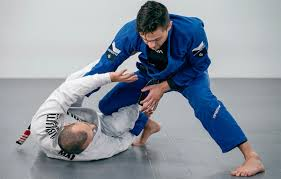
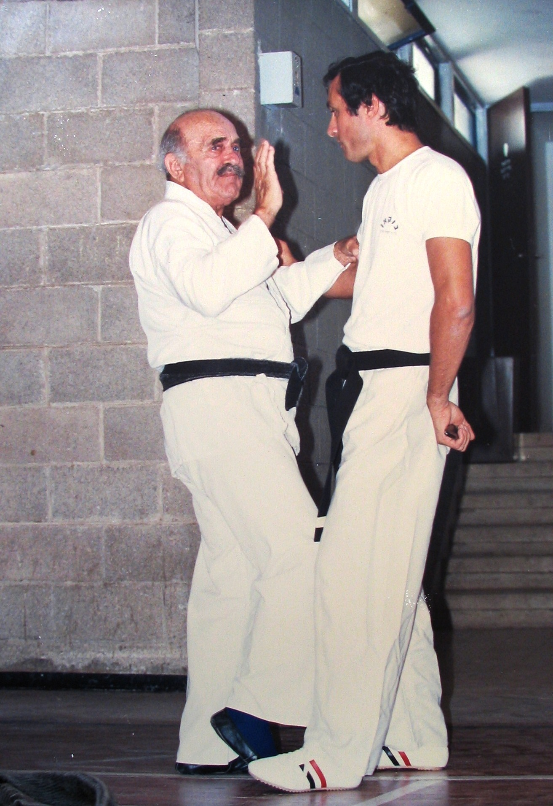

Elsőként általános iskolában találkoztam a harcművészettel. Ez akkor Shaolin Kung-Fut , illetve Wing Chun Kung-Fut jelentett. Ezt követően egy rövid ideig Krav Magáztam, majd annyiban maradt gimnáziumi éveim elején, egészen az egyetem végéig. Azután újra megtaláltam ezt az önvédelmi rendszert és 2022 nyara óta nagy lendülettel járok edzésekre. A Krav Maga a szintjei P1-P5, G1-G5, E1-E10 között alakulnak, én pedig P3-as szintre vizsgáztam tavaly év végén, tervek szerint pedig nyáron megyek a P4-es vizsgára. A jövőben tervezek visszamenni Brazil Jiu-Jitsu edzésekre (Gi vagy NoGi), illetve kiprobálnék valamilyen tradicionális harcművészetet is, mint pl. újra valamilyen Kung-Fut.
| Krav Maga szintek |
|
|---|---|
| Practicioner (P) | 1-5 |
| Graduate (G) | 1-5 |
| Expert (E) | 1-5 |
A jövőben tervezek visszamenni Brazil Jiu-Jitsu edzésekre (Gi vagy NoGi), illetve kiprobálnék valamilyen tradicionális harcművészetet is, mint pl. újra valamilyen Kung-Fut. 
Érdekesség a krav magáról, hogy egy magyar származású férfi, Lichtenfeld Imre kezdte el kidolgozni a második világháborút megelőző években, amikoris meg kellett védenie magát és a pozsonyi zsidó közösséget a helyi náciktól. 